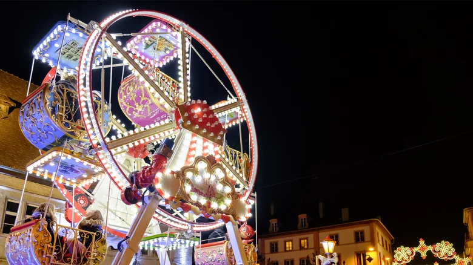
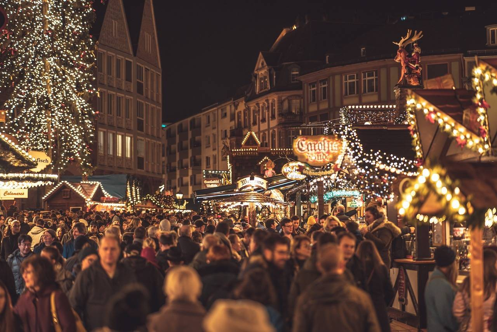

France: Montbeliard

While Strasbourg has one of the more famous Christmas markets in France, the eastern town of Montbeliard, not far from the German and Swiss borders, hosts a magical Christmas market worth visiting. The market features traditional Christmas figures from the region, including St. Nicholas, St. Lucia, and Aunt Airie, the good fairy of the Montbeliard area. The streets and town center are draped in light displays arranged in arches, pyramids, and canopies.

The Christmas Lights of Montbeliard
From November 24th till December 24th
Every year, during the advent period, Montbéliard revives the tradition of Württemberg and organizes a Christmas market like no other. Set in the town centre, this Christmas Market is a pure enchantment and for the 2017 edition, our guest of honour will be Andalucia. Hand-picked craftsmen, enchanting display of lights, carefully chosen activities for young and old and magic in the air… Montbéliard is paying attention to every detail to make sure the Christmas Lights offer all their wonders to the 570 000 visitors. Taking a stroll down the illuminated streets, they may taste the delicious gastronomic products from Montbéliard, marvel at the variety of craftsmen, dance to the music and the sound of choral songs, have fun skating on the ice rink and create all kind of things in the Elfin Workshop.
Aunt Airie, St Lucia and Saint Nicolas
Such a guest of honour deserves very special hosts. And indeed, the Christmas Lights will once again welcome legendary characters. Aunt Airie, the good fairy of the Montbéliard area, will wander through the streets with her little donkey called Marion, telling people about her story. Saint Lucia, the patron saint of lights, will take part in the Concert of Lights and fill with wonder young and old. And Saint Nicolas will give out presents and sweeties to the little ones.